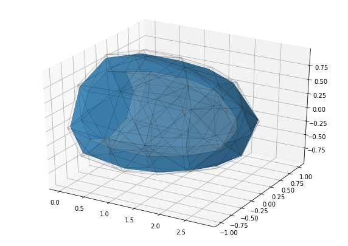

Finding the unloaded geometry¶
[2]:
import matplotlib.pyplot as plt
import dolfin
import pulse
geometry = pulse.HeartGeometry.from_file(pulse.mesh_paths['simple_ellipsoid'])
material = pulse.HolzapfelOgden()
# material = pulse.Guccione()
# Parameter for the cardiac boundary conditions
bcs_parameters = pulse.MechanicsProblem.default_bcs_parameters()
bcs_parameters['base_spring'] = 1.0
bcs_parameters['base_bc'] = 'fix_x'
# Create the problem
problem = pulse.MechanicsProblem(geometry, material,
bcs_parameters=bcs_parameters)
# Suppose geometry is loaded with a pressure of 1 kPa
# and create the unloader
unloader = pulse.FixedPointUnloader(problem=problem,
pressure=1.0)
# Unload the geometry
unloader.unload()
# Get the unloaded geometry
unloaded_geometry = unloader.unloaded_geometry
2019-05-22 07:49:36,245 - pulse.geometry_utils - INFO -
Load mesh from h5
2019-05-22 07:49:36,392 - pulse.unloader - INFO -
-------------------------- Unloading options ---------------------------
Target pressure: 1.0
maxiter = 10
tolerance = 0.0001
regenerate_fibers (serial only)= False
------------------------------------------------------------------------
2019-05-22 07:49:36,393 - pulse.unloader - INFO - ------------------------------------------------------------------------
2019-05-22 07:49:36,394 - pulse.unloader - INFO - ----------------------------Start unloading-----------------------------
2019-05-22 07:49:36,394 - pulse.unloader - INFO - ------------------------------------------------------------------------
2019-05-22 07:49:36,399 - pulse.unloader - INFO -
LV Volume of original geometry = 2.511 ml
2019-05-22 07:49:36,435 - pulse.unloader - INFO -
Do an intial solve
2019-05-22 07:49:36,855 - pulse.iterate - INFO - Control: [0.0]
2019-05-22 07:49:36,856 - pulse.iterate - INFO - Target: [1.0]
2019-05-22 07:49:36,857 - pulse.iterate - INFO - Check target reached: NO
2019-05-22 07:49:36,857 - pulse.iterate - INFO - Maximum difference: 1.000e+00
2019-05-22 07:49:36,858 - pulse.iterate - INFO - Try new control
2019-05-22 07:49:36,859 - pulse.iterate - INFO - Current control: 0.200
2019-05-22 07:49:37,482 - pulse.iterate - INFO -
SUCCESFULL STEP:
2019-05-22 07:49:37,483 - pulse.iterate - INFO - Check target reached: NO
2019-05-22 07:49:37,484 - pulse.iterate - INFO - Maximum difference: 8.000e-01
2019-05-22 07:49:37,485 - pulse.iterate - INFO - Adapt step size. New step size: 0.300
2019-05-22 07:49:37,486 - pulse.iterate - INFO - Check target reached: NO
2019-05-22 07:49:37,487 - pulse.iterate - INFO - Maximum difference: 8.000e-01
2019-05-22 07:49:37,488 - pulse.iterate - INFO - Try new control
2019-05-22 07:49:37,489 - pulse.iterate - INFO - Current control: 0.500
2019-05-22 07:49:38,036 - pulse.iterate - INFO -
SUCCESFULL STEP:
2019-05-22 07:49:38,037 - pulse.iterate - INFO - Check target reached: NO
2019-05-22 07:49:38,038 - pulse.iterate - INFO - Maximum difference: 5.000e-01
2019-05-22 07:49:38,038 - pulse.iterate - INFO - Adapt step size. New step size: 0.450
2019-05-22 07:49:38,040 - pulse.iterate - INFO - Check target reached: NO
2019-05-22 07:49:38,041 - pulse.iterate - INFO - Maximum difference: 5.000e-01
2019-05-22 07:49:38,041 - pulse.iterate - INFO - Try new control
2019-05-22 07:49:38,042 - pulse.iterate - INFO - Current control: 0.950
2019-05-22 07:49:38,732 - pulse.iterate - INFO -
SUCCESFULL STEP:
2019-05-22 07:49:38,733 - pulse.iterate - INFO - Check target reached: NO
2019-05-22 07:49:38,734 - pulse.iterate - INFO - Maximum difference: 5.000e-02
2019-05-22 07:49:38,735 - pulse.iterate - INFO - Adapt step size. New step size: 0.675
2019-05-22 07:49:38,736 - pulse.iterate - INFO - Check target reached: NO
2019-05-22 07:49:38,737 - pulse.iterate - INFO - Maximum difference: 5.000e-02
2019-05-22 07:49:38,737 - pulse.iterate - INFO - Change step size for final iteration
2019-05-22 07:49:38,738 - pulse.iterate - INFO - Try new control
2019-05-22 07:49:38,739 - pulse.iterate - INFO - Current control: 1.000
2019-05-22 07:49:39,143 - pulse.iterate - INFO -
SUCCESFULL STEP:
2019-05-22 07:49:39,144 - pulse.iterate - INFO - Check target reached: YES!
2019-05-22 07:49:39,146 - pulse.iterate - INFO - Check target reached: YES!
2019-05-22 07:49:39,155 - pulse.unloader - INFO -
Iteration: 0
2019-05-22 07:49:40,399 - pulse.unloading_utils - INFO -
LV Volume of original geometry = 1.755 ml
2019-05-22 07:49:40,437 - pulse.iterate - INFO - Control: [0.0]
2019-05-22 07:49:40,438 - pulse.iterate - INFO - Target: [1.0]
2019-05-22 07:49:40,439 - pulse.iterate - INFO - Check target reached: NO
2019-05-22 07:49:40,440 - pulse.iterate - INFO - Maximum difference: 1.000e+00
2019-05-22 07:49:40,441 - pulse.iterate - INFO - Try new control
2019-05-22 07:49:40,441 - pulse.iterate - INFO - Current control: 0.200
2019-05-22 07:49:40,989 - pulse.iterate - INFO -
SUCCESFULL STEP:
2019-05-22 07:49:40,990 - pulse.iterate - INFO - Check target reached: NO
2019-05-22 07:49:40,991 - pulse.iterate - INFO - Maximum difference: 8.000e-01
2019-05-22 07:49:40,991 - pulse.iterate - INFO - Adapt step size. New step size: 0.300
2019-05-22 07:49:40,992 - pulse.iterate - INFO - Check target reached: NO
2019-05-22 07:49:40,993 - pulse.iterate - INFO - Maximum difference: 8.000e-01
2019-05-22 07:49:40,994 - pulse.iterate - INFO - Try new control
2019-05-22 07:49:40,994 - pulse.iterate - INFO - Current control: 0.500
2019-05-22 07:49:41,523 - pulse.iterate - INFO -
SUCCESFULL STEP:
2019-05-22 07:49:41,524 - pulse.iterate - INFO - Check target reached: NO
2019-05-22 07:49:41,525 - pulse.iterate - INFO - Maximum difference: 5.000e-01
2019-05-22 07:49:41,525 - pulse.iterate - INFO - Adapt step size. New step size: 0.450
2019-05-22 07:49:41,526 - pulse.iterate - INFO - Check target reached: NO
2019-05-22 07:49:41,527 - pulse.iterate - INFO - Maximum difference: 5.000e-01
2019-05-22 07:49:41,528 - pulse.iterate - INFO - Try new control
2019-05-22 07:49:41,529 - pulse.iterate - INFO - Current control: 0.950
2019-05-22 07:49:42,191 - pulse.iterate - INFO -
SUCCESFULL STEP:
2019-05-22 07:49:42,191 - pulse.iterate - INFO - Check target reached: NO
2019-05-22 07:49:42,192 - pulse.iterate - INFO - Maximum difference: 5.000e-02
2019-05-22 07:49:42,193 - pulse.iterate - INFO - Adapt step size. New step size: 0.675
2019-05-22 07:49:42,194 - pulse.iterate - INFO - Check target reached: NO
2019-05-22 07:49:42,195 - pulse.iterate - INFO - Maximum difference: 5.000e-02
2019-05-22 07:49:42,196 - pulse.iterate - INFO - Change step size for final iteration
2019-05-22 07:49:42,197 - pulse.iterate - INFO - Try new control
2019-05-22 07:49:42,197 - pulse.iterate - INFO - Current control: 1.000
2019-05-22 07:49:42,588 - pulse.iterate - INFO -
SUCCESFULL STEP:
2019-05-22 07:49:42,589 - pulse.iterate - INFO - Check target reached: YES!
2019-05-22 07:49:42,590 - pulse.iterate - INFO - Check target reached: YES!
2019-05-22 07:49:42,604 - pulse.unloading_utils - INFO -
LV Volume of inflated geometry = 1.755 ml
2019-05-22 07:49:43,805 - pulse.unloading_utils - INFO -
LV Volume of new reference geometry = 2.382 ml
2019-05-22 07:49:43,813 - pulse.unloader - INFO -
Residual: 0.022215441356976378
2019-05-22 07:49:43,814 - pulse.unloader - INFO -
Iteration: 1
2019-05-22 07:49:44,905 - pulse.unloading_utils - INFO -
LV Volume of original geometry = 1.862 ml
2019-05-22 07:49:44,941 - pulse.iterate - INFO - Control: [0.0]
2019-05-22 07:49:44,942 - pulse.iterate - INFO - Target: [1.0]
2019-05-22 07:49:44,943 - pulse.iterate - INFO - Check target reached: NO
2019-05-22 07:49:44,944 - pulse.iterate - INFO - Maximum difference: 1.000e+00
2019-05-22 07:49:44,945 - pulse.iterate - INFO - Try new control
2019-05-22 07:49:44,946 - pulse.iterate - INFO - Current control: 0.200
2019-05-22 07:49:45,489 - pulse.iterate - INFO -
SUCCESFULL STEP:
2019-05-22 07:49:45,490 - pulse.iterate - INFO - Check target reached: NO
2019-05-22 07:49:45,491 - pulse.iterate - INFO - Maximum difference: 8.000e-01
2019-05-22 07:49:45,491 - pulse.iterate - INFO - Adapt step size. New step size: 0.300
2019-05-22 07:49:45,493 - pulse.iterate - INFO - Check target reached: NO
2019-05-22 07:49:45,493 - pulse.iterate - INFO - Maximum difference: 8.000e-01
2019-05-22 07:49:45,494 - pulse.iterate - INFO - Try new control
2019-05-22 07:49:45,495 - pulse.iterate - INFO - Current control: 0.500
2019-05-22 07:49:46,010 - pulse.iterate - INFO -
SUCCESFULL STEP:
2019-05-22 07:49:46,011 - pulse.iterate - INFO - Check target reached: NO
2019-05-22 07:49:46,012 - pulse.iterate - INFO - Maximum difference: 5.000e-01
2019-05-22 07:49:46,012 - pulse.iterate - INFO - Adapt step size. New step size: 0.450
2019-05-22 07:49:46,014 - pulse.iterate - INFO - Check target reached: NO
2019-05-22 07:49:46,015 - pulse.iterate - INFO - Maximum difference: 5.000e-01
2019-05-22 07:49:46,016 - pulse.iterate - INFO - Try new control
2019-05-22 07:49:46,016 - pulse.iterate - INFO - Current control: 0.950
2019-05-22 07:49:46,674 - pulse.iterate - INFO -
SUCCESFULL STEP:
2019-05-22 07:49:46,675 - pulse.iterate - INFO - Check target reached: NO
2019-05-22 07:49:46,675 - pulse.iterate - INFO - Maximum difference: 5.000e-02
2019-05-22 07:49:46,676 - pulse.iterate - INFO - Adapt step size. New step size: 0.675
2019-05-22 07:49:46,677 - pulse.iterate - INFO - Check target reached: NO
2019-05-22 07:49:46,678 - pulse.iterate - INFO - Maximum difference: 5.000e-02
2019-05-22 07:49:46,678 - pulse.iterate - INFO - Change step size for final iteration
2019-05-22 07:49:46,679 - pulse.iterate - INFO - Try new control
2019-05-22 07:49:46,679 - pulse.iterate - INFO - Current control: 1.000
2019-05-22 07:49:47,108 - pulse.iterate - INFO -
SUCCESFULL STEP:
2019-05-22 07:49:47,109 - pulse.iterate - INFO - Check target reached: YES!
2019-05-22 07:49:47,110 - pulse.iterate - INFO - Check target reached: YES!
2019-05-22 07:49:47,126 - pulse.unloading_utils - INFO -
LV Volume of inflated geometry = 1.862 ml
2019-05-22 07:49:48,354 - pulse.unloading_utils - INFO -
LV Volume of new reference geometry = 2.529 ml
2019-05-22 07:49:48,362 - pulse.unloader - INFO -
Residual: 0.0036360722069058216
2019-05-22 07:49:48,362 - pulse.unloader - INFO -
Iteration: 2
2019-05-22 07:49:49,571 - pulse.unloading_utils - INFO -
LV Volume of original geometry = 1.847 ml
2019-05-22 07:49:49,611 - pulse.iterate - INFO - Control: [0.0]
2019-05-22 07:49:49,611 - pulse.iterate - INFO - Target: [1.0]
2019-05-22 07:49:49,612 - pulse.iterate - INFO - Check target reached: NO
2019-05-22 07:49:49,613 - pulse.iterate - INFO - Maximum difference: 1.000e+00
2019-05-22 07:49:49,613 - pulse.iterate - INFO - Try new control
2019-05-22 07:49:49,614 - pulse.iterate - INFO - Current control: 0.200
2019-05-22 07:49:50,296 - pulse.iterate - INFO -
SUCCESFULL STEP:
2019-05-22 07:49:50,297 - pulse.iterate - INFO - Check target reached: NO
2019-05-22 07:49:50,298 - pulse.iterate - INFO - Maximum difference: 8.000e-01
2019-05-22 07:49:50,298 - pulse.iterate - INFO - Adapt step size. New step size: 0.300
2019-05-22 07:49:50,299 - pulse.iterate - INFO - Check target reached: NO
2019-05-22 07:49:50,300 - pulse.iterate - INFO - Maximum difference: 8.000e-01
2019-05-22 07:49:50,301 - pulse.iterate - INFO - Try new control
2019-05-22 07:49:50,301 - pulse.iterate - INFO - Current control: 0.500
2019-05-22 07:49:50,866 - pulse.iterate - INFO -
SUCCESFULL STEP:
2019-05-22 07:49:50,867 - pulse.iterate - INFO - Check target reached: NO
2019-05-22 07:49:50,867 - pulse.iterate - INFO - Maximum difference: 5.000e-01
2019-05-22 07:49:50,868 - pulse.iterate - INFO - Adapt step size. New step size: 0.450
2019-05-22 07:49:50,869 - pulse.iterate - INFO - Check target reached: NO
2019-05-22 07:49:50,870 - pulse.iterate - INFO - Maximum difference: 5.000e-01
2019-05-22 07:49:50,870 - pulse.iterate - INFO - Try new control
2019-05-22 07:49:50,871 - pulse.iterate - INFO - Current control: 0.950
2019-05-22 07:49:51,566 - pulse.iterate - INFO -
SUCCESFULL STEP:
2019-05-22 07:49:51,567 - pulse.iterate - INFO - Check target reached: NO
2019-05-22 07:49:51,567 - pulse.iterate - INFO - Maximum difference: 5.000e-02
2019-05-22 07:49:51,568 - pulse.iterate - INFO - Adapt step size. New step size: 0.675
2019-05-22 07:49:51,569 - pulse.iterate - INFO - Check target reached: NO
2019-05-22 07:49:51,569 - pulse.iterate - INFO - Maximum difference: 5.000e-02
2019-05-22 07:49:51,570 - pulse.iterate - INFO - Change step size for final iteration
2019-05-22 07:49:51,571 - pulse.iterate - INFO - Try new control
2019-05-22 07:49:51,572 - pulse.iterate - INFO - Current control: 1.000
2019-05-22 07:49:52,011 - pulse.iterate - INFO -
SUCCESFULL STEP:
2019-05-22 07:49:52,012 - pulse.iterate - INFO - Check target reached: YES!
2019-05-22 07:49:52,013 - pulse.iterate - INFO - Check target reached: YES!
2019-05-22 07:49:52,028 - pulse.unloading_utils - INFO -
LV Volume of inflated geometry = 1.847 ml
2019-05-22 07:49:53,295 - pulse.unloading_utils - INFO -
LV Volume of new reference geometry = 2.509 ml
2019-05-22 07:49:53,304 - pulse.unloader - INFO -
Residual: 0.00059109345652087
2019-05-22 07:49:53,305 - pulse.unloader - INFO -
Iteration: 3
2019-05-22 07:49:54,518 - pulse.unloading_utils - INFO -
LV Volume of original geometry = 1.849 ml
2019-05-22 07:49:54,558 - pulse.iterate - INFO - Control: [0.0]
2019-05-22 07:49:54,558 - pulse.iterate - INFO - Target: [1.0]
2019-05-22 07:49:54,560 - pulse.iterate - INFO - Check target reached: NO
2019-05-22 07:49:54,560 - pulse.iterate - INFO - Maximum difference: 1.000e+00
2019-05-22 07:49:54,561 - pulse.iterate - INFO - Try new control
2019-05-22 07:49:54,561 - pulse.iterate - INFO - Current control: 0.200
2019-05-22 07:49:55,248 - pulse.iterate - INFO -
SUCCESFULL STEP:
2019-05-22 07:49:55,249 - pulse.iterate - INFO - Check target reached: NO
2019-05-22 07:49:55,249 - pulse.iterate - INFO - Maximum difference: 8.000e-01
2019-05-22 07:49:55,250 - pulse.iterate - INFO - Adapt step size. New step size: 0.300
2019-05-22 07:49:55,251 - pulse.iterate - INFO - Check target reached: NO
2019-05-22 07:49:55,251 - pulse.iterate - INFO - Maximum difference: 8.000e-01
2019-05-22 07:49:55,252 - pulse.iterate - INFO - Try new control
2019-05-22 07:49:55,253 - pulse.iterate - INFO - Current control: 0.500
2019-05-22 07:49:55,830 - pulse.iterate - INFO -
SUCCESFULL STEP:
2019-05-22 07:49:55,831 - pulse.iterate - INFO - Check target reached: NO
2019-05-22 07:49:55,832 - pulse.iterate - INFO - Maximum difference: 5.000e-01
2019-05-22 07:49:55,832 - pulse.iterate - INFO - Adapt step size. New step size: 0.450
2019-05-22 07:49:55,833 - pulse.iterate - INFO - Check target reached: NO
2019-05-22 07:49:55,834 - pulse.iterate - INFO - Maximum difference: 5.000e-01
2019-05-22 07:49:55,835 - pulse.iterate - INFO - Try new control
2019-05-22 07:49:55,835 - pulse.iterate - INFO - Current control: 0.950
2019-05-22 07:49:56,553 - pulse.iterate - INFO -
SUCCESFULL STEP:
2019-05-22 07:49:56,554 - pulse.iterate - INFO - Check target reached: NO
2019-05-22 07:49:56,555 - pulse.iterate - INFO - Maximum difference: 5.000e-02
2019-05-22 07:49:56,555 - pulse.iterate - INFO - Adapt step size. New step size: 0.675
2019-05-22 07:49:56,556 - pulse.iterate - INFO - Check target reached: NO
2019-05-22 07:49:56,557 - pulse.iterate - INFO - Maximum difference: 5.000e-02
2019-05-22 07:49:56,557 - pulse.iterate - INFO - Change step size for final iteration
2019-05-22 07:49:56,558 - pulse.iterate - INFO - Try new control
2019-05-22 07:49:56,559 - pulse.iterate - INFO - Current control: 1.000
2019-05-22 07:49:57,019 - pulse.iterate - INFO -
SUCCESFULL STEP:
2019-05-22 07:49:57,019 - pulse.iterate - INFO - Check target reached: YES!
2019-05-22 07:49:57,021 - pulse.iterate - INFO - Check target reached: YES!
2019-05-22 07:49:57,036 - pulse.unloading_utils - INFO -
LV Volume of inflated geometry = 1.849 ml
2019-05-22 07:49:58,336 - pulse.unloading_utils - INFO -
LV Volume of new reference geometry = 2.512 ml
2019-05-22 07:49:58,346 - pulse.unloader - INFO -
Residual: 0.0001030256253301169
2019-05-22 07:49:58,346 - pulse.unloader - INFO -
Iteration: 4
2019-05-22 07:49:59,609 - pulse.unloading_utils - INFO -
LV Volume of original geometry = 1.849 ml
2019-05-22 07:49:59,650 - pulse.iterate - INFO - Control: [0.0]
2019-05-22 07:49:59,651 - pulse.iterate - INFO - Target: [1.0]
2019-05-22 07:49:59,652 - pulse.iterate - INFO - Check target reached: NO
2019-05-22 07:49:59,653 - pulse.iterate - INFO - Maximum difference: 1.000e+00
2019-05-22 07:49:59,653 - pulse.iterate - INFO - Try new control
2019-05-22 07:49:59,654 - pulse.iterate - INFO - Current control: 0.200
2019-05-22 07:50:00,232 - pulse.iterate - INFO -
SUCCESFULL STEP:
2019-05-22 07:50:00,233 - pulse.iterate - INFO - Check target reached: NO
2019-05-22 07:50:00,234 - pulse.iterate - INFO - Maximum difference: 8.000e-01
2019-05-22 07:50:00,234 - pulse.iterate - INFO - Adapt step size. New step size: 0.300
2019-05-22 07:50:00,235 - pulse.iterate - INFO - Check target reached: NO
2019-05-22 07:50:00,236 - pulse.iterate - INFO - Maximum difference: 8.000e-01
2019-05-22 07:50:00,236 - pulse.iterate - INFO - Try new control
2019-05-22 07:50:00,237 - pulse.iterate - INFO - Current control: 0.500
2019-05-22 07:50:00,818 - pulse.iterate - INFO -
SUCCESFULL STEP:
2019-05-22 07:50:00,818 - pulse.iterate - INFO - Check target reached: NO
2019-05-22 07:50:00,819 - pulse.iterate - INFO - Maximum difference: 5.000e-01
2019-05-22 07:50:00,819 - pulse.iterate - INFO - Adapt step size. New step size: 0.450
2019-05-22 07:50:00,820 - pulse.iterate - INFO - Check target reached: NO
2019-05-22 07:50:00,821 - pulse.iterate - INFO - Maximum difference: 5.000e-01
2019-05-22 07:50:00,822 - pulse.iterate - INFO - Try new control
2019-05-22 07:50:00,822 - pulse.iterate - INFO - Current control: 0.950
2019-05-22 07:50:01,531 - pulse.iterate - INFO -
SUCCESFULL STEP:
2019-05-22 07:50:01,532 - pulse.iterate - INFO - Check target reached: NO
2019-05-22 07:50:01,532 - pulse.iterate - INFO - Maximum difference: 5.000e-02
2019-05-22 07:50:01,533 - pulse.iterate - INFO - Adapt step size. New step size: 0.675
2019-05-22 07:50:01,534 - pulse.iterate - INFO - Check target reached: NO
2019-05-22 07:50:01,534 - pulse.iterate - INFO - Maximum difference: 5.000e-02
2019-05-22 07:50:01,535 - pulse.iterate - INFO - Change step size for final iteration
2019-05-22 07:50:01,535 - pulse.iterate - INFO - Try new control
2019-05-22 07:50:01,536 - pulse.iterate - INFO - Current control: 1.000
2019-05-22 07:50:01,986 - pulse.iterate - INFO -
SUCCESFULL STEP:
2019-05-22 07:50:01,986 - pulse.iterate - INFO - Check target reached: YES!
2019-05-22 07:50:01,988 - pulse.iterate - INFO - Check target reached: YES!
2019-05-22 07:50:02,003 - pulse.unloading_utils - INFO -
LV Volume of inflated geometry = 1.849 ml
2019-05-22 07:50:03,292 - pulse.unloading_utils - INFO -
LV Volume of new reference geometry = 2.511 ml
2019-05-22 07:50:03,303 - pulse.unloader - INFO -
Residual: 1.7348365912202567e-05
2019-05-22 07:50:03,305 - pulse.unloader - INFO - ########################################################################
Unloading suceeding
[3]:
from fenics_plotly import plot
fig = plot(geometry.mesh, show=False)
fig.add_plot(plot(unloaded_geometry.mesh, color="red", show=False))
fig.show()

[ ]: